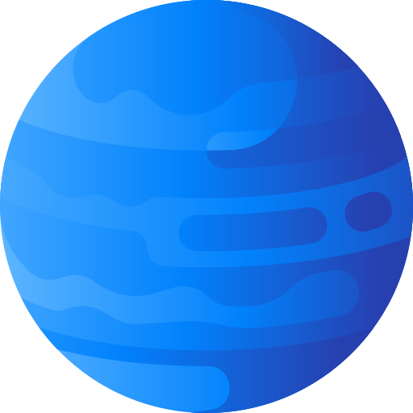
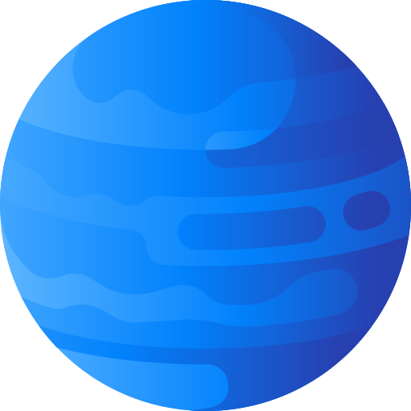
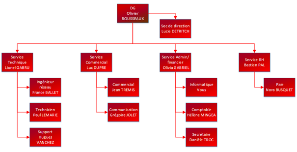
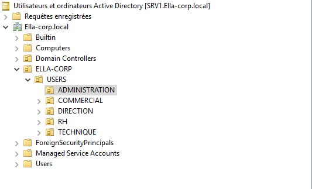
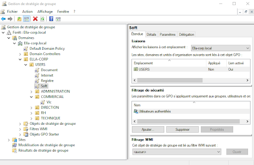

Ce projet avait pour but de recréer une infrastructure windows server pour une entreprise constituée de 15 employées et 2 serveurs en redondance. Ce projet à durée 2 mois nos serveur était composé de différent service comme : DNS, DHCP, AD, WDS, WSUS,...

Pour que notre annuaire soit bien organisé j'ai créé une OU correspondant à chaque groupe afin de mieux gérer les règles de gestion.
Une fois ceci fait il a fallu créer ces fameuses règles de gestion (GPO). Par exemple déployer sur toutes les sessions utilisateur les navigateurs web classique ou alors empêcher l'utilisateur d'accéder à des paramètres à haut risque comme le proxy ou la gestion des logiciels.
